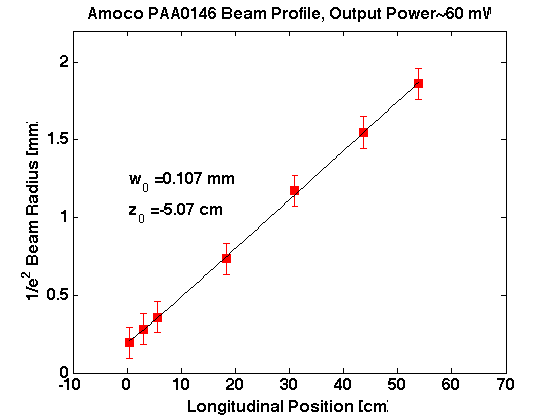

Contents
Gaussian Beam Fitting
close all
clear all
Initialization
fontsize = 16;
lambda = 1064e-9;
errorflag = 1;
Import data
filename = char('/Users/work/Documents/Spin Squeezing/Equipment/Amoco Laser PAA0146/BeamProfile_AmocoPAA0146_20110715.txt');
[z beamsize]=textread(filename, '%f%f','commentstyle','matlab');
Data preparation
z = z.*1e-2;
beamsize = beamsize.*1e-3;
lambdavector = zeros(1,length(z));
lambdavector(1) = lambda;
Fitting
InitialGuess=[7e-4 1];
datamatrix = [z(:) lambdavector(:)];
if errorflag==1
errorvector = beamsize./beamsize;
[P,r,J]=nlinfitweight(datamatrix,beamsize(:),@fittogaussianbeampropagation,InitialGuess,errorvector(:));
else
[P,r,J]=nlinfit(datamatrix,beamsize(:),@fittogaussianbeampropagation,InitialGuess);
end
fitwaist = P(1)
fitwaistposition = P(2)
fitwaist =
1.0700e-04
fitwaistposition =
-0.0507
Generate vector that represents the fit to the points
stepsize = (max(z)-min(z))/100;
fitz = min(z):stepsize:max(z);
zR = pi*fitwaist^2/lambda;
fitbeamsize = fitwaist.*sqrt(1+((fitz-fitwaistposition)./zR).^2);
Plot the data, the fit, and the fit parameters
figure(1)
if errorflag==1
errorbar(z(:).*1e2,beamsize(:).*1e3,errorvector(:)./10,'sr','MarkerFaceColor','r','MarkerSize',8)
else
plot(z(:).*1e2,beamsize(:).*1e3,'sr','MarkerFaceColor','r','MarkerSize',8)
end
hold on
plot(fitz(:).*1e2,fitbeamsize(:).*1e3,'-k','LineWidth',1.2)
ylim([0 2.2]);
xlim([-10 70]);
set(gca,'FontSize',fontsize,'FontWeight','bold');
xlabel('Longitudinal Position [cm]','FontSize',fontsize,'FontWeight','bold');
ylabel('1/e^2 Beam Radius [mm]','FontSize',fontsize,'FontWeight','bold');
text(min(fitz.*1e2),1.2,strcat('w_0 = ',num2str(fitwaist.*1e3,3),' mm'),'FontSize',fontsize,'FontWeight','bold');
text(min(fitz.*1e2),1,strcat('z_0 = ',num2str(fitwaistposition.*1e2,3),' cm'),'FontSize',fontsize,'FontWeight','bold');
title('Amoco PAA0146 Beam Profile, Output Power~60 mW','FontSize',fontsize,'FontWeight','bold');
